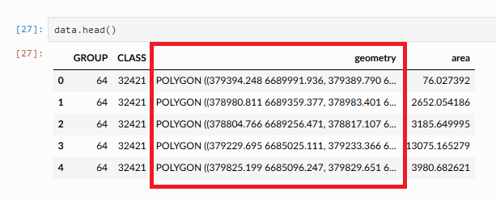

Introduction to Geopandas¶
Geopandas (http://geopandas.org/) makes it possible to work with geospatial data in Python in a relatively easy way. Geopandas combines the capabilities of the data analysis library pandas with other packages like shapely and fiona for managing spatial data.
The main data structures in geopandas; GeoSeries and GeoDataFrame extend the capabilities of Series and DataFrames from pandas. This means that we can apply our pandas skills also with geopandas data structures. If you need to refresh your memory about pandas, check out week 5 and 6 lesson materials from the Geo-Python website.
The main difference between geodataframes and pandas dataframes is that a geodataframe should contain one column for geometries (by default, the name of this column is 'geometry'). The geometry column is a geoseries which contains the geometries (points, lines, polygons, multipolygons etc.) for each row of data.

As we learned in the Geo-Python course, it is conventional to import pandas as pd. Similarly,we will import geopandas as gpd:
[1]:
import geopandas as gpd
In this lesson, we will cover basics steps needed for interacting with spatial data in Python using geopandas:
- Managing filepaths
- Reading a shapefile
- Geometry calculations
- Writing a shapefile
- Grouping and splitting spatial data into multiple layers
Before diving deeper into geopandas functionalities, let’s first acquire some input data to work with.
Input data: Finnish topographic database¶
- Topographic Database from the National Land Survey of Finland (NLS).
- The data set is licensed under the NLS’ open data licence (CC BY 4.0).
- Structure of the data is described in a separate Excel file (download link).
- Further information about file naming at fairdata.fi.
- We acquired the data via the CSC open data portal:

In this lesson, we will focus on terrain objects (Feature group: “Terrain/1”) downloaded as Shapefiles. According to the naming convention of the Topographic Database for Shapefiles, all files that start with a letter m and end with p contain the objects we are interested in (Terrain/1 polygons). Furthermore, the Terrain/1 feature group contains several feature classes. Our final task in this lesson is to
save all these feature classes into separate files.
Terrain/1 features in the Topographic Database:
| feature class | Name of feature | Feature group |
|---|---|---|
| 32421 | Motor traffic area | Terrain/1 |
| 32200 | Cemetery | Terrain/1 |
| 34300 | Sand | Terrain/1 |
| 34100 | Rock - area | Terrain/1 |
| 34700 | Rocky area | Terrain/1 |
| 32500 | Quarry | Terrain/1 |
| 32112 | Mineral resources extraction area, fine-grained material | Terrain/1 |
| 32111 | Mineral resources extraction area, coarse-grained material | Terrain/1 |
| 32611 | Field | Terrain/1 |
| 32612 | Garden | Terrain/1 |
| 32800 | Meadow | Terrain/1 |
| 32900 | Park | Terrain/1 |
| 35300 | Paludified land | Terrain/1 |
| 35412 | Bog, easy to traverse forested | Terrain/1 |
| 35411 | Open bog, easy to traverse treeless | Terrain/1 |
| 35421 | Open fen, difficult to traverse treeless | Terrain/1 |
| 33000 | Earth fill | Terrain/1 |
| 33100 | Sports and recreation area | Terrain/1 |
| 36200 | Lake water | Terrain/1 |
| 36313 | Watercourse area | Terrain/1 |
Downloading data¶
On Binder and CSC Notebook environment, you can use wget program to download the data from the command line. Let’s download the data (download link) into the same folder with the lesson 2 notebooks (.../notebooks/L2):
- Open up a new terminal window
- Navigate to the correct folder in the terminal:
# Navigate to lesson 2 notebooks directory:
$ cd /home/jovyan/work/autogis/notebooks/notebooks/L2
- use
wgetutility to dowload the data from the dowload link:
$ wget https://github.com/AutoGIS/data/raw/master/L2_data.zip
Copy-paste
You can copy/paste things to JupyterLab Terminal by pressing SHIFT + RIGHT-CLICK on your mouse and choosing Paste.
Once you have downloaded the L2_data.zip file into your home directory, you can unzip the file using unzip command in the Terminal (or e.g. 7zip on Windows if working with own computer). Run the following commands in the .../notebooks/L2 -directory:
$ unzip L2_data.zip
$ ls L2_data
You can also check the contents of the downloaded and unzipped file in the file browser window.
The L2_data folder contains several subfolders. After unzipping the downloaded file, you can find the data for this tutorial under: L2_data/NLS/2018/L4/L41/L4132R.shp. Notice that Shapefile -fileformat contains many separate files such as .dbf that contains the attribute information, and .prj -file that contains information about coordinate reference system.
Managing filepaths¶
Built-in module os provides many useful functions for interacting with the operating system. One of the most useful submodules in the os package is the os.path-module for manipulating file paths. This week, we have data in different sub-folders and we can practice how to use os path tools when defining filepaths.
- Let’s import
osand see how we can construct a filepath by joining a folder path and file name:
[2]:
import os
# Define path to folder
input_folder = r"L2_data/NLS/2018/L4/L41/L4132R.shp"
# Join folder path and filename
fp = os.path.join(input_folder, "m_L4132R_p.shp")
# Print out the full file path
print(fp)
L2_data/NLS/2018/L4/L41/L4132R.shp/m_L4132R_p.shp
Reading a Shapefile¶
Typically reading the data into Python is the first step of the analysis pipeline. There are various different GIS data formats available. Shapefile, GeoJSON, KML, and GPKG are one of the most common vector data formats currently in use. Geopandas is capable of reading data from all of these formats (plus many more).
In geopandas, we use a generic function .from_file() for reading in different data formats. In the bacground, Geopandas uses fiona.open() when reading in data.
- When reading in a Shapefile, we only need to pass the filepath when reading data:
[3]:
import geopandas as gpd
# Read file using gpd.read_file()
data = gpd.read_file(fp)
- Let’s see check the data type:
[4]:
type(data)
[4]:
geopandas.geodataframe.GeoDataFrame
Here we see that our data -variable is a GeoDataFrame. GeoDataFrame extends the functionalities of pandas.DataFrame in a way that it is possible to handle spatial data using similar approaches and datastructures as in pandas (hence the name geopandas).
- Let’s take a look at our data and print the first rows using the
head()-function:
[5]:
print(data.head())
TEKSTI RYHMA LUOKKA TASTAR KORTAR KORARV KULKUTAPA KOHDEOSO \
0 None 64 32421 5000 0 0.0 0 1812247077
1 None 64 32421 5000 0 0.0 0 1718796908
2 None 64 32421 20000 0 0.0 0 411167695
3 None 64 32421 20000 0 0.0 0 411173768
4 None 64 32421 20000 0 0.0 0 411173698
AINLAHDE SYNTYHETKI ... KARTOGLK ALUEJAKOON VERSUH SUUNTA SIIRT_DX \
0 1 20180125 ... 0 0 0 0 0
1 1 20180120 ... 0 0 0 0 0
2 1 20180120 ... 0 0 0 0 0
3 1 20180120 ... 0 0 0 0 0
4 1 20180120 ... 0 0 0 0 0
SIIRT_DY KORKEUS ATTR2 ATTR3 \
0 0 0.0 0 0
1 0 0.0 0 0
2 0 0.0 0 0
3 0 0.0 0 0
4 0 0.0 0 0
geometry
0 POLYGON ((379394.248 6689991.936, 379389.790 6...
1 POLYGON ((378980.811 6689359.377, 378983.401 6...
2 POLYGON ((378804.766 6689256.471, 378817.107 6...
3 POLYGON ((379229.695 6685025.111, 379233.366 6...
4 POLYGON ((379825.199 6685096.247, 379829.651 6...
[5 rows x 21 columns]
- Check all column names:
[6]:
data.columns
[6]:
Index(['TEKSTI', 'RYHMA', 'LUOKKA', 'TASTAR', 'KORTAR', 'KORARV', 'KULKUTAPA',
'KOHDEOSO', 'AINLAHDE', 'SYNTYHETKI', 'KUOLHETKI', 'KARTOGLK',
'ALUEJAKOON', 'VERSUH', 'SUUNTA', 'SIIRT_DX', 'SIIRT_DY', 'KORKEUS',
'ATTR2', 'ATTR3', 'geometry'],
dtype='object')
As most of you probably notice, all the column names are in Finnish… - Let’s select only the useful columns and rename them into English:
[7]:
data = data[['RYHMA', 'LUOKKA', 'geometry']]
- Define new column names in a dictionary:
[8]:
colnames = {'RYHMA':'GROUP', 'LUOKKA':'CLASS'}
- rename the columns:
[9]:
data.rename(columns=colnames, inplace=True)
[10]:
data.columns
[10]:
Index(['GROUP', 'CLASS', 'geometry'], dtype='object')
Task
Figure out the following information from our input data based on your pandas-skills from the Geo-Python course:
- Number of rows?
- Number of classes?
- Number of groups?
Solutions:
[11]:
print("Number of rows", len(data['CLASS']))
print("Number of classes", data['CLASS'].nunique())
print("Number of groups", data['GROUP'].nunique())
Number of rows 4311
Number of classes 20
Number of groups 1
It is always a good idea to explore your data also on a map. Creating a simple map from a GeoDataFrame is really easy: you can use .plot() -function from geopandas that creates a map based on the geometries of the data. Geopandas actually uses matplotlib for plotting which we introduced in Lesson 7 of the Geo-Python course.
- Let’s try it out, and plot our GeoDataFrame:
[12]:
%matplotlib inline
data.plot()
[12]:
<matplotlib.axes._subplots.AxesSubplot at 0x7f8cc41d46a0>

Voilá! As we can see, it is really easy to produce a map out of your Shapefile with geopandas. Geopandas automatically positions your map in a way that it covers the whole extent of your data.
If you are living in the Helsinki region, you might recognize the shapes plotted on the map!
Geometries in Geopandas¶
Geopandas takes advantage of Shapely’s geometric objects. Geometries are stored in a column called geometry that is a default column name for storing geometric information in geopandas.
- Let’s print the first 5 rows of the column ‘geometry’:
[13]:
# It is possible to get a specific column by specifying the column name within square brackets []
print(data['geometry'].head())
0 POLYGON ((379394.248 6689991.936, 379389.790 6...
1 POLYGON ((378980.811 6689359.377, 378983.401 6...
2 POLYGON ((378804.766 6689256.471, 378817.107 6...
3 POLYGON ((379229.695 6685025.111, 379233.366 6...
4 POLYGON ((379825.199 6685096.247, 379829.651 6...
Name: geometry, dtype: geometry
As we can see the geometry column contains familiar looking values, namely Shapely Polygon -objects. Since the spatial data is stored as Shapely objects, it is possible to use all of the functionalities of the Shapely module when dealing with geometries in geopandas.
Let’s have a closer look at the polygons and try to apply some of the Shapely methods we learned last week.
- Let’s start by checking the area of the first polygon in the data:
[14]:
print("Polygon:", data.at[0, "geometry"])
print("Area:", round(data.at[0, "geometry"].area,0), "square meters")
Polygon: POLYGON ((379394.248 6689991.936, 379389.79 6690000, 379408.646 6690000, 379394.248 6689991.936))
Area: 76.0 square meters
Let’s do the same for the first five rows in the data;
- Iterate over the GeoDataFrame rows using the
iterrows()-function that we learned during the Lesson 6 of the Geo-Python course. - For each row, print the area of the polygon (here, we’ll limit the for-loop to a selection of the first five rows):
[15]:
# Iterate over rows and print the area of a Polygon
for index, row in data[0:5].iterrows():
# Get the area from the shapely-object stored in the geometry-column
poly_area = row['geometry'].area
# Print info
print("Polygon area at index {index} is: {area:.2f} m^2".format(index=index, area=poly_area))
Polygon area at index 0 is: 76.03 m^2
Polygon area at index 1 is: 2652.05 m^2
Polygon area at index 2 is: 3185.65 m^2
Polygon area at index 3 is: 13075.17 m^2
Polygon area at index 4 is: 3980.68 m^2
As you see from here, all the functionalities of pandas, such as the iterrows() function, are directly available in Geopandas without the need to call pandas separately because Geopandas is an extension for pandas.
In practice, it is not necessary to use the iterrows()-approach to calculate the area for all features. Geodataframes and geoseries have an attribute area which we can use for accessing the area for each feature at once:
[16]:
data.area.head()
[16]:
0 76.027392
1 2652.054186
2 3185.649995
3 13075.165279
4 3980.682621
dtype: float64
- Let’s next create a new column into our GeoDataFrame where we calculate and store the areas of individual polygons:
[17]:
# Create a new column called 'area' and assign the area of the Polygons into it
data['area'] = data.area
- Check the output:
[18]:
data['area'].head()
[18]:
0 76.027392
1 2652.054186
2 3185.649995
3 13075.165279
4 3980.682621
Name: area, dtype: float64
These values correspond to the ones we saw in previous step when iterating rows.
- Let’s check what is the
min,maxandmeanof those areas using familiar functions from our previous Pandas lessions.
[19]:
# Maximum area
max_area = data['area'].max()
[20]:
# Minimum area
min_area = data['area'].min()
[21]:
# Mean area
mean_area = data['area'].mean()
[22]:
print("Max area: {maximum} square meters".format(maximum=round(max_area, 0)))
print("Min area: {minimum} square meters".format(minimum=round(min_area, 0)))
print("Mean area: {mean} square meters".format(mean=round(mean_area, 0)))
Max area: 4084558.0 square meters
Min area: 1.0 square meters
Mean area: 11522.0 square meters
Writing a shapefile¶
It is possible to export GeoDataFrames into various data formats using gpd.to_file(). Here, we will first learn how to export a subset of the data into a Shapefile.
- Let’s first select one class (class number
36200, “Lake water”) from the data as a new GeoDataFrame:
[23]:
# Select a class
selection = data.loc[data["CLASS"]==36200]
- Check the selection:
[24]:
selection.plot()
[24]:
<matplotlib.axes._subplots.AxesSubplot at 0x7f8cc4199710>

- write this layer into a new Shapefile using the
gpd.to_file()-function:
[25]:
# Create a output path for the data
output_folder = r"L2_data/"
output_fp = os.path.join(output_folder, "Class_36200.shp")
[26]:
# Write those rows into a new file (the default output file format is Shapefile)
selection.to_file(output_fp)
Task
Read the output Shapefile in a new geodataframe, and check that the data looks ok.
[ ]:
Grouping the Geodataframe¶
One really useful function that can be used in Pandas/Geopandas is .groupby() which groups data based on values on selected column(s). We saw and used this function already in Lesson 6 of the Geo-Python course.
Next we will automate the file export task; we will group the data based on column CLASS and export a shapefile for each class.
Let’s continue with the same input file we already read previously into the variable data. We also selected and renamed a subset of the columns.
- Check the first rows of the data:
[27]:
data.head()
[27]:
| GROUP | CLASS | geometry | area | |
|---|---|---|---|---|
| 0 | 64 | 32421 | POLYGON ((379394.248 6689991.936, 379389.790 6... | 76.027392 |
| 1 | 64 | 32421 | POLYGON ((378980.811 6689359.377, 378983.401 6... | 2652.054186 |
| 2 | 64 | 32421 | POLYGON ((378804.766 6689256.471, 378817.107 6... | 3185.649995 |
| 3 | 64 | 32421 | POLYGON ((379229.695 6685025.111, 379233.366 6... | 13075.165279 |
| 4 | 64 | 32421 | POLYGON ((379825.199 6685096.247, 379829.651 6... | 3980.682621 |
The CLASS column in the data contains information about different land use types. With .unique() -function we can quickly see all different values in that column:
[28]:
# Print all unique values in the column
print(data['CLASS'].unique())
[32421 32200 34300 34100 34700 32500 32112 32111 32611 32612 32800 32900
35300 35412 35411 35421 33000 33100 36200 36313]
- Now we can use that information to group our data and save all land use types into different layers:
[29]:
# Group the data by class
grouped = data.groupby('CLASS')
# Let's see what we have
grouped
[29]:
<pandas.core.groupby.generic.DataFrameGroupBy object at 0x7f8cc4175048>
As we can see, groupby -function gives us an object called DataFrameGroupBy which is similar to list of keys and values (in a dictionary) that we can iterate over. For more information about grouped objects, see Lesson 6 of the Geo-Python course.
- Check out all group keys:
[30]:
grouped.groups.keys()
[30]:
dict_keys([32111, 32112, 32200, 32421, 32500, 32611, 32612, 32800, 32900, 33000, 33100, 34100, 34300, 34700, 35300, 35411, 35412, 35421, 36200, 36313])
The group keys are unique values from the column by which we grouped the dataframe.
- Check how many rows of data each group has:
[31]:
# Iterate over the group object
for key, group in grouped:
# Let's check how many rows each group has:
print('Terrain class:', key)
print('Number of rows:', len(group), "\n")
Terrain class: 32111
Number of rows: 1
Terrain class: 32112
Number of rows: 1
Terrain class: 32200
Number of rows: 2
Terrain class: 32421
Number of rows: 110
Terrain class: 32500
Number of rows: 2
Terrain class: 32611
Number of rows: 257
Terrain class: 32612
Number of rows: 11
Terrain class: 32800
Number of rows: 80
Terrain class: 32900
Number of rows: 28
Terrain class: 33000
Number of rows: 5
Terrain class: 33100
Number of rows: 118
Terrain class: 34100
Number of rows: 3005
Terrain class: 34300
Number of rows: 1
Terrain class: 34700
Number of rows: 3
Terrain class: 35300
Number of rows: 134
Terrain class: 35411
Number of rows: 35
Terrain class: 35412
Number of rows: 449
Terrain class: 35421
Number of rows: 5
Terrain class: 36200
Number of rows: 56
Terrain class: 36313
Number of rows: 8
There are, for example, 56 lake polygons in the input data.
We can also check how the last group looks like (we have the variables in memory from the last iteration of the for-loop):
[32]:
group.head()
[32]:
| GROUP | CLASS | geometry | area | |
|---|---|---|---|---|
| 4303 | 64 | 36313 | POLYGON ((377127.305 6688073.257, 377116.045 6... | 9619.307973 |
| 4304 | 64 | 36313 | POLYGON ((371141.897 6677999.999, 371139.757 6... | 25266.167705 |
| 4305 | 64 | 36313 | POLYGON ((371498.720 6680399.799, 371497.585 6... | 364.087680 |
| 4306 | 64 | 36313 | POLYGON ((375668.607 6682942.062, 375671.489 6... | 2651.800270 |
| 4307 | 64 | 36313 | POLYGON ((368411.063 6679328.990, 368411.424 6... | 376.503380 |
Notice that the index numbers refer to the row numbers in the original data -GeoDataFrame.
Check also the data type of the group:
[33]:
type(group)
[33]:
geopandas.geodataframe.GeoDataFrame
As we can see, each set of data are now grouped into separate GeoDataFrames, and we can save them into separate files.
Saving multiple output files¶
Let’s export each class into a separate Shapefile. While doing this, we also want to create unique filenames for each class.
When looping over the grouped object, information about the class is stored in the variable key, and we can use this information for creating new variable names inside the for-loop. For example, we want to name the shapefile containing lake polygons as “terrain_36200.shp”.
String formatting
There are different approaches for formatting strings in Python. Here are a couple of different ways for putting together file-path names using two variables:
basename = "terrain"
key = 36200
# OPTION 1. Concatenating using the `+` operator:
out_fp = basename + "_" + str(key) + ".shp"
# OPTION 2. Positional formatting using `%` operator
out_fp = "%s_%s.shp" %(basename, key)
# OPTION 3. Positional formatting using `.format()`
out_fp = "{}_{}.shp".format(basename, key)
Read more from here: https://pyformat.info/
Let’s now export terrain classes into separate Shapefiles.
- First, create a new folder for the outputs:
[34]:
# Determine output directory
output_folder = r"L2_data/"
# Create a new folder called 'Results'
result_folder = os.path.join(output_folder, 'Results')
# Check if the folder exists already
if not os.path.exists(result_folder):
# If it does not exist, create one
os.makedirs(result_folder)
At this point, you can go to the file browser and check that the new folder was created successfully.
- Iterate over groups, create a file name, and save group to file:
[35]:
# Iterate over the groups
for key, group in grouped:
# Format the filename
output_name = "terrain_%s.shp" % str(key)
# Print information about the process
print("Saving file", os.path.basename(output_name))
# Create an output path
outpath = os.path.join(result_folder, output_name)
# Export the data
group.to_file(outpath)
Saving file terrain_32111.shp
Saving file terrain_32112.shp
Saving file terrain_32200.shp
Saving file terrain_32421.shp
Saving file terrain_32500.shp
Saving file terrain_32611.shp
Saving file terrain_32612.shp
Saving file terrain_32800.shp
Saving file terrain_32900.shp
Saving file terrain_33000.shp
Saving file terrain_33100.shp
Saving file terrain_34100.shp
Saving file terrain_34300.shp
Saving file terrain_34700.shp
Saving file terrain_35300.shp
Saving file terrain_35411.shp
Saving file terrain_35412.shp
Saving file terrain_35421.shp
Saving file terrain_36200.shp
Saving file terrain_36313.shp
Excellent! Now we have saved those individual classes into separate Shapefiles and named the file according to the class name. These kind of grouping operations can be really handy when dealing with layers of spatial data. Doing similar process manually would be really laborious and error-prone.
Extra: save data to csv¶
We can also extract basic statistics from our geodataframe, and save this information as a text file.
Let’s summarize the total area of each group:
[36]:
area_info = grouped.area.sum().round()
[37]:
area_info
[37]:
CLASS
32111 1834.0
32112 2148.0
32200 105737.0
32421 702073.0
32500 109747.0
32611 13135597.0
32612 107343.0
32800 1465278.0
32900 617209.0
33000 659465.0
33100 3777595.0
34100 12381611.0
34300 1627.0
34700 2786.0
35300 1382940.0
35411 411198.0
35412 4710133.0
35421 67864.0
36200 9986966.0
36313 43459.0
Name: area, dtype: float64
- save area info to csv using pandas:
[38]:
# Create an output path
area_info.to_csv("terrain_class_areas.csv", header=True)
Summary¶
In this tutorial we introduced the first steps of using geopandas. More specifically you should know how to:
- Read data from Shapefile using geopandas
- Access geometry information in a geodataframe
- Write GeoDataFrame data from Shapefile using geopandas
- Automate a task to save specific rows from data into Shapefile based on specific key using
groupby()-function - Extra: saving attribute information to a csv file.